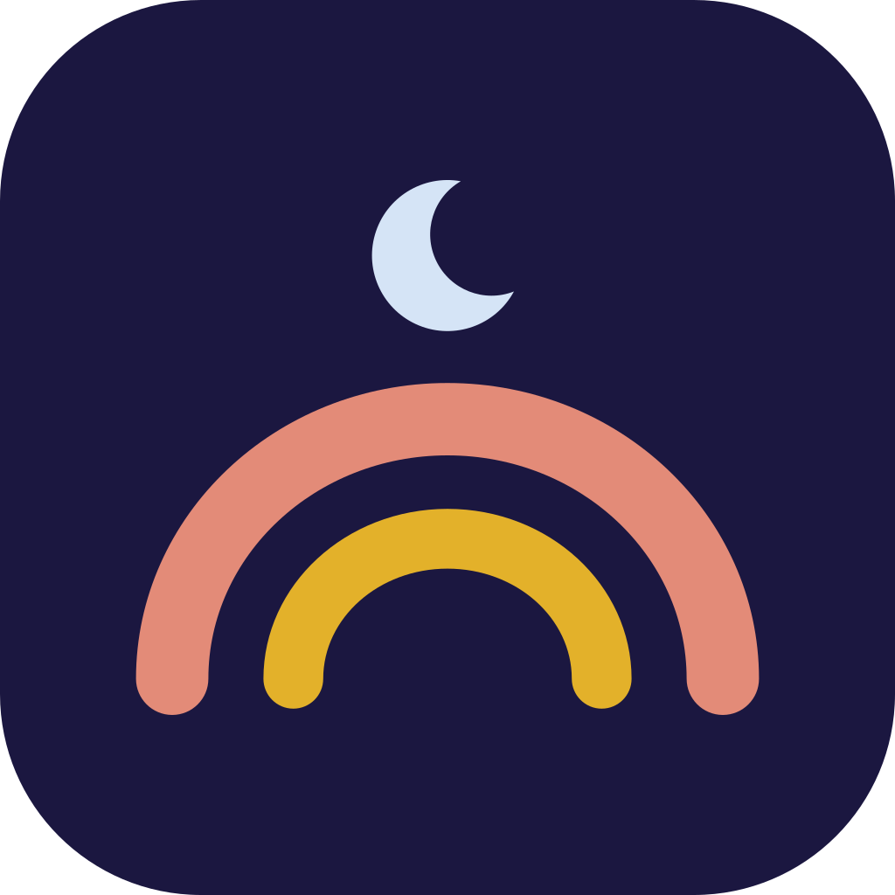

Until TwoPrivacy policy
Effective November 3, 2026.
Until Two does not collect the log or anything in it. The log you keep stays on your phone. There is no account, no server, no advertising, and no tracking, and Until Two runs no analytics of its own.
What stays on your phone
Everything you enter: the baby's name and birthday, the names of the people who share care, and each feed, diaper, sleep, medicine, growth measure, and note. It is stored on the phone, in storage the app shares with its own widgets. The developer cannot see it, and the app sends no copy anywhere.
Your phone's backup
If the phone backs itself up, the backup includes the log. On iPhone that is an iCloud or computer backup; on Android it is the phone's Google backup. The backup belongs to your Apple or Google account, not to Until Two, and it is how a new phone gets the log back. The developer cannot read it. On iPhone you can leave Until Two out of iCloud Backup in Settings, under your name, iCloud, iCloud Backup; a backup to a computer still includes it. On Android, turning off the phone's backup leaves the log out of the Google backup.
Setting up a new phone straight from the old one is a separate step from backup. Android's phone-to-phone transfer, by cable or wirelessly, and iPhone's Quick Start both copy the log to the new phone, even when backup is off. The copy goes from one phone to the other, not to Until Two.
What leaves your phone
Only what you choose to send. When you send a care file or a PDF, it goes through the app you pick: AirDrop, Messages, Mail, Files, or another. A care file contains the log. Notes written on the baby's entries go too, unless you turn off "Include notes written on entries" before you send it. That switch starts on. Older entries you kept about yourself, such as mood, sleep, water, meals or a journal, go only if you turn on "Include my own entries (mood, sleep…)". That switch starts off. The file is locked with a password you choose, and whoever has the file and the password can read it. A chat or mail app keeps its own copy under its own terms, and a file you already sent cannot be taken back.
Questions you ask, and your voice
On a phone that can run it, Ask answers a question about the log with the language model built into the phone: Apple Intelligence on iPhone, Gemini Nano on Android. The question and the part of the log it needs stay on the phone. Whether Ask may read your notes is a switch in Settings, Intelligence.
On Android, the app includes Google's ML Kit, the library that runs Gemini Nano. ML Kit sends Google information about the phone and the app, such as the phone model, the app version, an identifier and error codes. Google uses it for diagnostics and to measure how the library is used, and does not share it. The library starts when the app opens, whether or not you use Ask. It sends nothing from the log. The Google Play listing declares it.
The microphone is used only after you tap it. A spoken question is turned into text by the phone's own speech recognition, on the device where the phone supports your language. Where it does not, Apple's or Google's speech service transcribes it under their terms. Until Two does not keep the audio. Asking through Siri follows Apple's Siri terms.
Notifications and reminders
Reminders and the running-timer Live Activity are scheduled on the phone. They do not go through a server.
With one child, the lock screen, notifications, widgets and the watch say what is running, not the baby's name, unless you turn names on. With two or more children, each child's name shows there, so you can tell whose timer is whose; the app tells you the first time. To keep names off, turn them off in Settings, This phone, and that choice stays. "Hide names on Today and the lock screen" hides every name outside the app.
Crash reports
The app does not send crash reports. On Android, Google's ML Kit sends the diagnostics described under "Questions you ask". If you have turned on sharing with app developers in iOS Settings, Apple may pass anonymous crash data to the developer. You can turn that off in Settings → Privacy & Security → Analytics & Improvements.
Children
Until Two is used by parents and caregivers to keep a record about a child. It does not collect information about the child or anyone in the log. ML Kit's diagnostics on Android are about the phone and the app, not the people who use it.
Your choices
Settings → Delete the log erases it from the phone. Removing the app erases it too. There is no server copy to delete. A phone backup made earlier still holds the log until that backup is deleted. Settings → Intelligence turns off notes for Ask. Microphone and speech recognition access can be turned off at any time in the phone's own settings.
Changes
If this policy changes, the new version will be posted on this page with a new effective date. A change in what the app, or a library in it, collects would be a change to the app, not only to this page, and would be stated in the App Store and Google Play listings.
Contact
Questions about privacy: sudathmurari9@gmail.com.